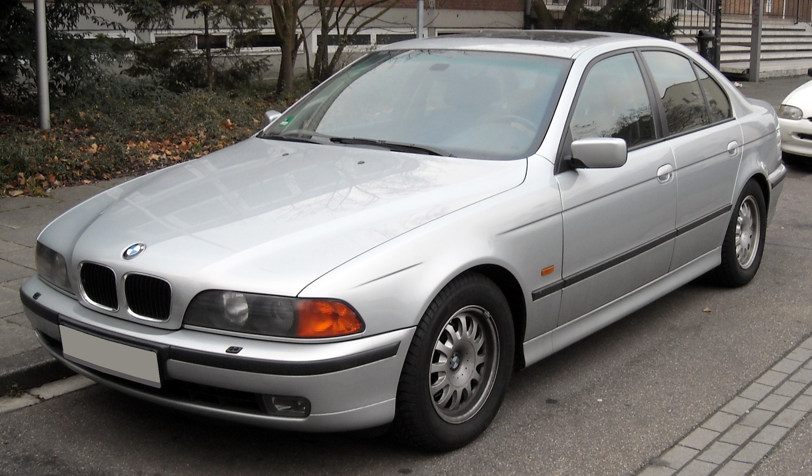
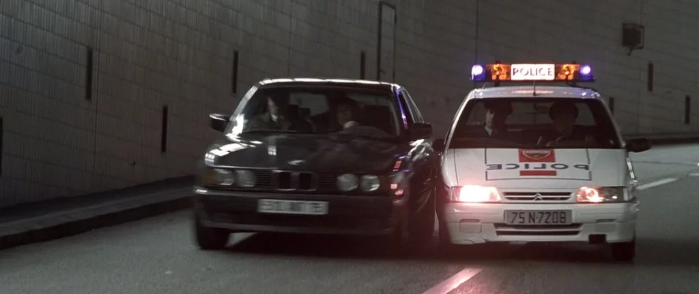
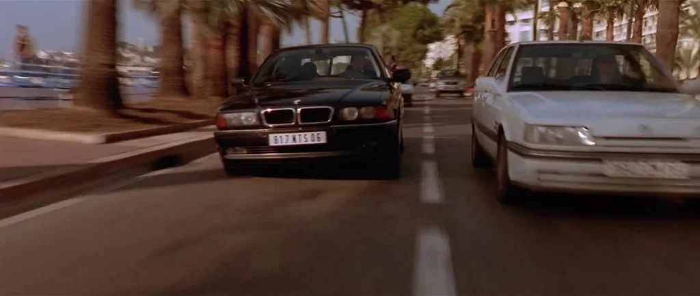
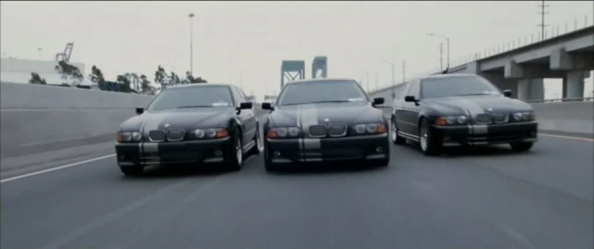

_20090314_front.jpg)
The BMW 3 Series, BMW 5 Series, and BMW 7 Series are some of the most iconic models that have won the hearts of car enthusiasts worldwide.
These cars are renowned for their performance, luxury, and innovative features.
Explore the legendary BMW models and their history.
| First film | Second film | Third film |
|---|---|---|
|  |  |  |
| Ronin | The Transporter | Mr. & Mrs. Smith |
| E34 | E38 | E39 |
Back to home.